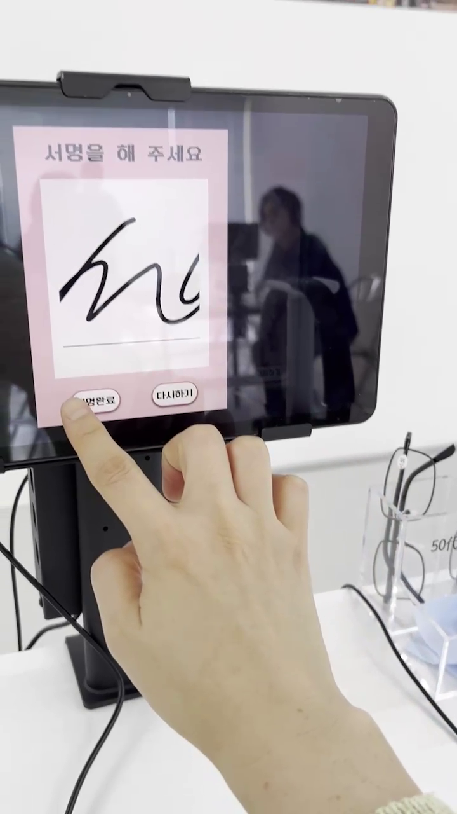
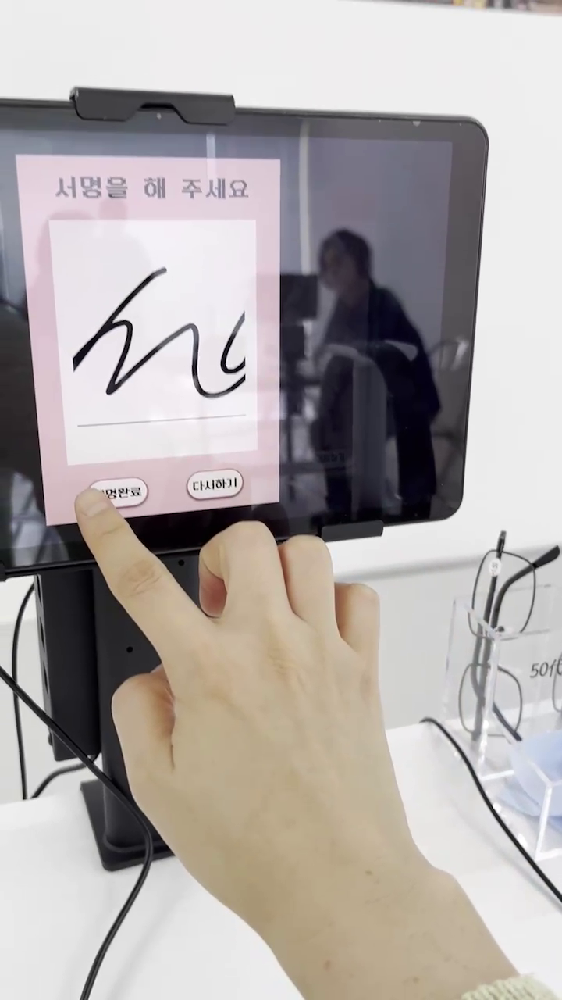
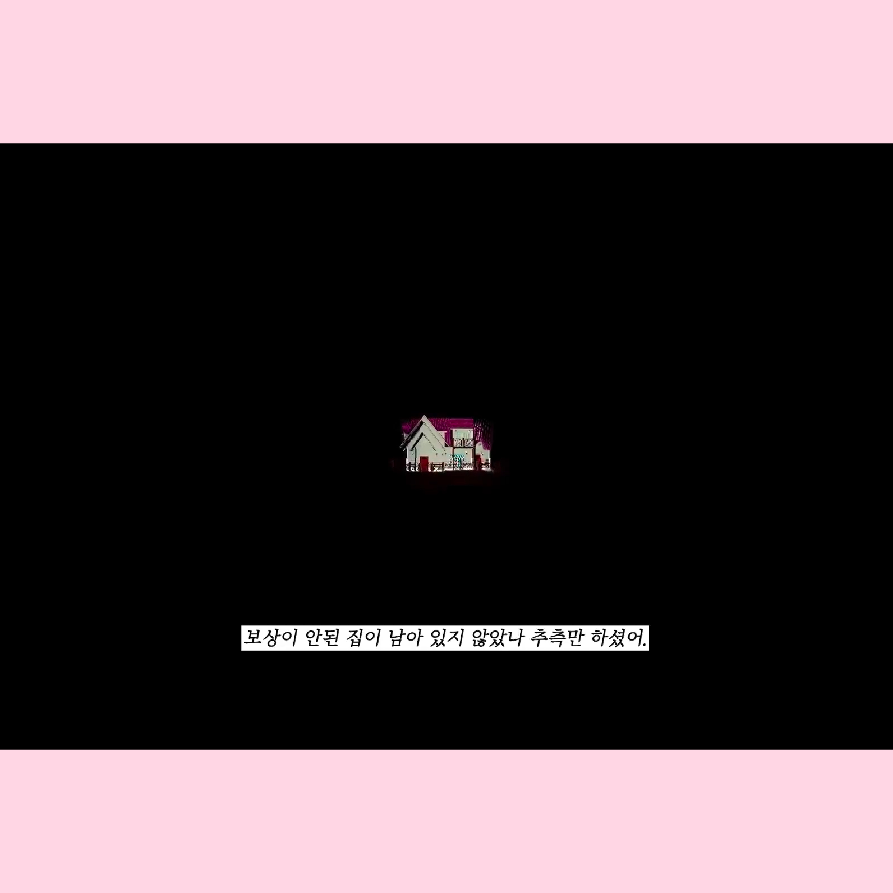
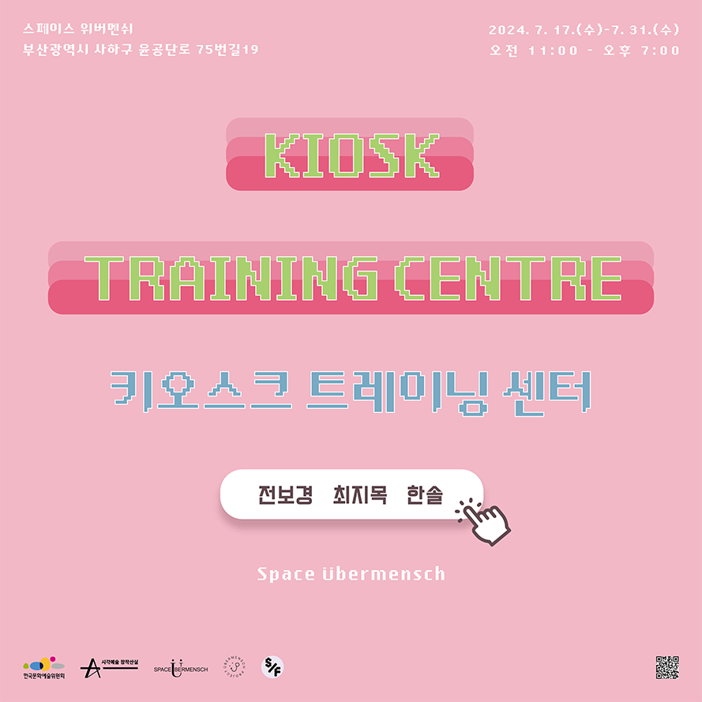
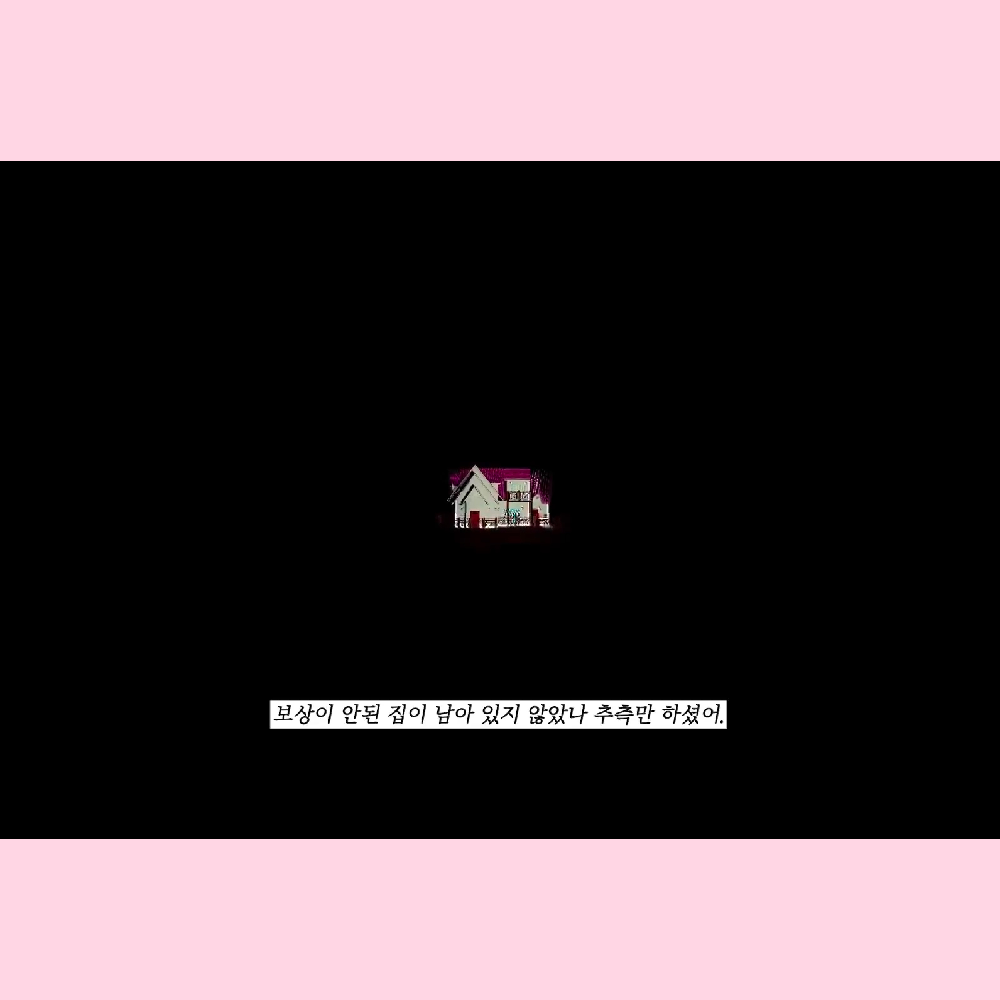
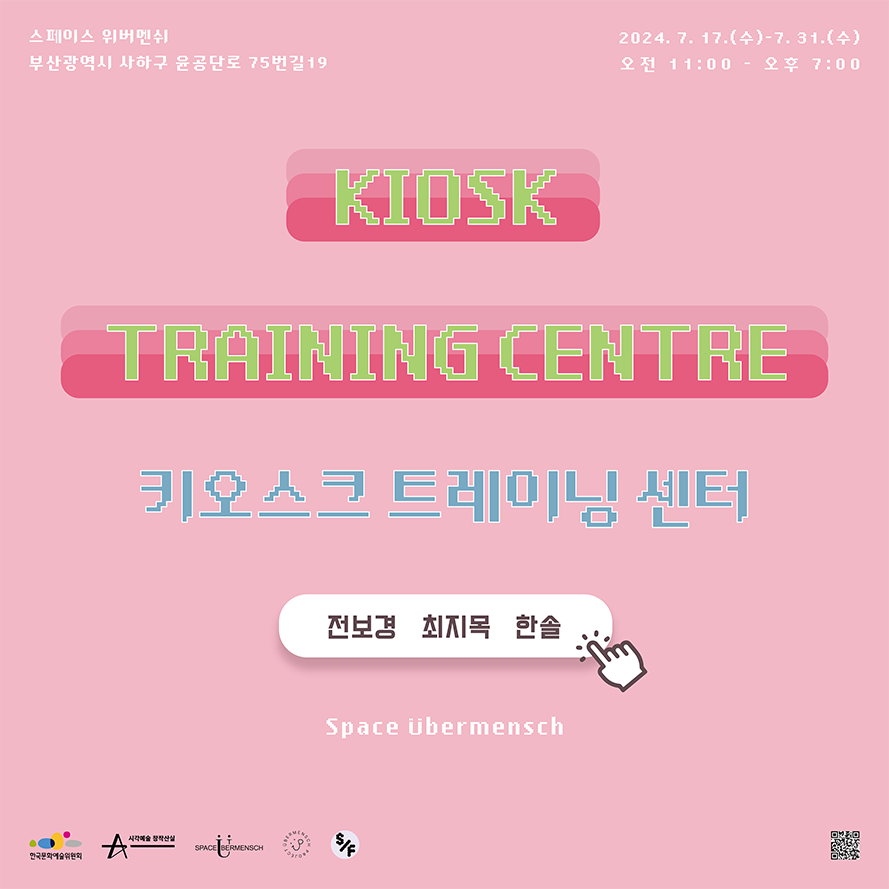

 



키오스크 트레이닝 센터
장소: 스페이스 위버멘쉬
주최/주관: 스페이스 위버멘쉬(위버멘쉬 프로젝트)
참여 작가: 전보경, 최지목, 한솔
참여 기획자: 오윤영, 김도플(위버멘쉬 프로젝트)
후원: 한국문화예술위원회
소프트웨어 개발: 박진희
디자인: 오윤영, 최경호
촬영 및 영상: 임봉호
《키오스크 트레이닝 센터》는 기술 발전이 심화된 지역 및 세대 간 격차를 줄이고자 위버멘쉬 프로젝트에서 기획하였으며 전보경, 최지목, 한솔 작가가 참여하였다. 전시장에는 매장을 모방한 테이블과 키오스크 기기를 설치하고 벽면에 인공지능으로 제작한 이미지를 부착하였다. 기기에 설치된 무인 결제 시스템은 소프트웨어 개발자와 협업하여 만든 장치이다. 예술 감상이 허용하는 여유 속에서 화면을 직접 만져보고 가상으로 결제해 보며 작가와 자신의 서명이 함께 담긴 영수증을 받아볼 수 있다. 예술적 바라보기가 세대 간, 예술과 관람자, 기술과 인간 사이 물리적·심리적 거리를 좁혀볼 수 있을지에 대한 실험이다.
이 불확실성의 끝에는 무엇이 찾아올 것인가? 편리함 뒤에 은폐된 것은 무엇인가? 급격히 밀려오는 흐름 속에 수치화할 수 없는 것들이 있다. 기술에서 멀어지거나, 가시적으로 드러나지 않는 유령 노동자, 개발 혹은 사회적 문제로 밀려나거나 사라지는 사람들이 있다. 일개 개인의 일로 치부되는 현상들에 신경 쓸 수 없는 것은 사회가 너무 빨리 변해가고 있어서일지도 모른다. 키오스크 트레이닝 센터에서는 픽셀과 같이 작지만 분명 존재하는 상태들에 집중한다. 현실과 가상에 발을 걸친 전시장에서는 자신만의 속도를 갖추도록 유희적으로 훈련할 수 있다. 납작한 키오스크 표면 아래 겹겹이 쌓인 레이어들은 작가들의 눈으로 바라본 세상이자 웅크린 잠재성이다. 자신이 살아가는 세상을 느끼며 예술 및 지역 문제를 다루고, 기술과 신체의 관계를 조망하는 작가들의 작업을 키오스크에서 감상하도록 기획하였다.
전보경은 환경 안에서 신체가 세계를 감각하는 방식의 변화를 탐구한다. 작가는 2016년부터 2020년까지 장인의 몸짓과 지혜의 말을 수집해 책, 영상, 설치 작업으로 재구성하며 노동과 예술의 관계를 탐구한 바 있다. 효율적 생산 구조는 수공업자의 입지를 좁히고 노동자를 기계화한다. 동시에 인공지능이 발전하며 비인간적 존재에 대한 관심도 증가했다. 작가는 인간과 기술 사이에 공존과 ‘번역’이 있어야 한다고 이야기한다. 여기서 번역이란 존재끼리의 충돌과 협상에서 생성되는 이질적 연결망이며 서로를 해석하는 과정에서 새로운 관계를 맺는 방식이다. 현재 인간 신체를 하나의 연결점으로 상정하고, 신체가 환경을 번역하는 과정을 통해 인간 중심성에서 벗어나 정서적, 물질적 전환을 맞이하는 작업을 진행하고 있다.
<Zeros: 오류의 동작>은 노동 현장의 로봇팔과 인간 신체 움직임을 4장으로 구성한 작품이다. 작가는 ‘비효율성’에 집중하며 이를 유발하는 것은 일하지 않는 것이나 실수보다는 인간이 가진 고유성이라 보았다. 작가는 로봇팔의 움직임을 드로잉으로 번역했고, 이를 안무가 4명이 재해석했다. 영상의 텍스트는 생산성을 높이기 위해 비효율적 움직임을 제거한 공학자 길브레스(Gilbreth)의 동작 연구, 기계와 인간 사이의 차이와 특징 등을 다룬다. 작품은 비효율성의 창조적 힘을 모색하고 우리 삶에 스며든 비인간 존재들과 어떻게 공생할 것인지 질문한다.
최지목은 보는 방식과 인식, 예술과 비예술의 경계를 탐구한다. 회화 작업을 하던 그는 독일 유학길에 올라 예술의 소통 방식과 매체의 특성을 고민했다. 오려낸 그림 조각과 소시지를 판매하는 퍼포먼스로 일상 속 예술을 통한 소통 가능성을 이야기하거나, 일상용품이나 액자 등의 오브제를 선택하여 편집하는 등 다양한 형식을 사용했다. 본 전시의 두 영상 작품은 《환상의 섬(ARTLANTIS)》에서 선보였던 것으로 예술가와 관람자의 “보기”에서 오는 간극을 다룬다. 전설 속 아틀란티스를 찾아 나서듯 예술이 가져올 가능성의 세계와 가치를 믿고자 한다. 현재는 태양 빛의 잔상을 통해 사진으로 기록할 수 없는 이미지를 그리고 있다.
예술가들이 느끼는 소통의 괴리와 관객이 느끼는 난해함 사이에는 보이지 않는 관념과 편견이 복잡하게 얽혀있다. “어차피 관심도 없을 거야” 또는 “예술에 문외한이라..”라는 서로의 입장 차로 대표되는 소통의 단절을 해소하기 위해 시도한 영상 작업 <아버지와의 대화>는 소통할 수 있다는 착각의 늪에서 허우적대는 한 예술가의 실상을 여실히 보여준다. 각본 없이 진행된 인터뷰는 부자지간의 대화를 통해 개인전 “환상의 섬”의 전반적인 작업 소개 영상으로 계획했으나 대화한답시고 자신의 관점만을 열심히 피력하는 아들(작가)과 아들이 하는 일에 절대적 응원과 지지를 보내는 아버지의 마음이 주가 되어 전시에서 하나의 독립된 작업으로 소개했다.
한솔은 자신을 둘러싼 환경을 관찰하고 수집하여 주로 영상 매체를 이용해 묶어낸다. 시간성과 물질성, 시대상과 개인의 태도 등을 다루어왔다. 일례로 예술의 장 속에서 작가로 살아간다는 것은 무엇인지, 나아가 사회 속에서 개인이 어디 위치하는지 의문을 풀어내기도 했다. 2023년부터는 세대, 계승되는 구조들, 환경의 변천에 따른 지역성의 변화를 관찰하는 연구를 진행하였다. 본 전시에서는 김해시 상동 매리마을과 지역 개발이라는 맥락에서 시대적 변화와 개인의 서사, 전해지는 기억을 다룬다.
전시 작품 중 <나들이 (Picnic)>는 작가의 할머니가 매리마을에서 약 1시간 떨어진 신주거단지 경로당으로 휠체어를 끌며 걸어가는 장면을 긴 호흡으로 보여주는 영상이다. 북적이던 예전 경로당과 달리 신주거단지 경로당은 마을 정기회의 외엔 거의 아무도 오지 않는다. 작품은 개발 미포함 구역에 남아있는 할머니를 기록하며 시대적 흐름 앞에 놓인 개인의 작은 발걸음에 주목하였다.